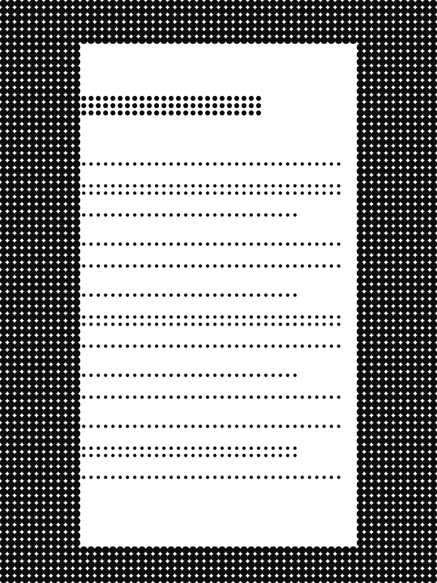

20·IX2026
84 rocznica powstania NSZ
Relacja z obchodów w Kamesznicy; Związek informuje o Złotym Medalu „Reipublicae Memoriae Meritum” przyznanym przez IPN.
Serwis Związku Żołnierzy Narodowych Sił Zbrojnych — organizacji kombatanckiej, która upamiętnia żołnierzy podziemia narodowego. Historia formacji z lat 1942–1947 i dzisiejsza działalność Związku to dwa różne tematy; oznaczamy, który jest który.
3·V·1946Wisła · przemarsz zgrupowania kpt. Henryka Flamego „Bartka”

Zgrupowanie „Bartka”, prowokacja aparatu bezpieczeństwa jesienią 1946 r. i pochówek odnalezionych żołnierzy w 2026 r.
Czytaj materiałZasada wariantu: dokument pokazujemy dopiero z sygnaturą, opisem i podstawą prawną publikacji. Nie generujemy imitacji archiwaliów.
PotwierdzoneZgrupowanie kpt. Henryka Flamego „Bartka” działało na Podbeskidziu od lata 1945 do jesieni 1946 r.; według IPN liczyło kilkuset partyzantów. W literaturze wskazywane jest jako najdłużej działające zgrupowanie NSZ.
PotwierdzoneJesienią 1946 r. UBP przeprowadził operację „Lawina”: rzekomy przerzut na Zachód zakończył się zamordowaniem żołnierzy na Opolszczyźnie.
Dostęp: 13.10.2026.
7 maja 2026 r. szczątki niemal 60 żołnierzy pochowano na nowym cmentarzu wojennym w Kamesznicy (według IPN 25 z nich znanych jest z imienia i nazwiska). 20 września 2026 r. Związek obchodził tam 84. rocznicę powstania NSZ.
Bieżąca działalność Związku: relacje, zapowiedzi, rocznice. Tytuły i daty z nsz.com.pl; zajawki redakcji prototypu.
20·IX2026
Relacja z obchodów w Kamesznicy; Związek informuje o Złotym Medalu „Reipublicae Memoriae Meritum” przyznanym przez IPN.
16·V2026
Obchody 3 maja 2026 r. w Wiśle, przypominające przemarsz oddziału przez miasto w 1946 r.; w oryginale rozbudowana galeria.
6·V2026
Relacja z udziału delegacji Związku w obchodach w Holiszowie (Czechy).
Kontekst: fakt uwolnienia więźniarek 5 maja 1945 r. jest potwierdzony; liczby i przebieg różnią się w źródłach, a ocena działań Brygady w 1945 r. jest sporna. Zobacz rozdział 04.19·IV2026
Zapowiedź uroczystości 7 maja 2026 r. — pochówku żołnierzy zgrupowania „Bartka” — z programem według IPN.
Siedem rozdziałów od genezy do upamiętnienia. Każde zdanie ma oznaczenie stopnia pewności i źródło; rozwiń rozdział, aby czytać.
PotwierdzoneNSZ powstały z połączenia dwóch środowisk: Organizacji Wojskowej Związek Jaszczurczy, zbudowanej od jesieni 1939 r. przez ONR „ABC” (Grupę „Szańca”), oraz części Narodowej Organizacji Wojskowej, która nie zgodziła się na scalenie z AK. Główny nurt Stronnictwa Narodowego i NOW podporządkował się Polskiemu Państwu Podziemnemu.
InterpretacjaStarania Grupy „Szańca” o uznanie przez rząd RP w latach 1939–1941 nie powiodły się m.in. z powodu zarzutów antysemityzmu i faszyzmu (Kaczmarski 2008).
Źródła: IPN, „Narodowe Siły Zbrojne (1942–1946)”; R. Wnuk, „Dzieje Najnowsze” 2021; K. Kaczmarski, „Pamięć i Sprawiedliwość” 2008 (abstrakt).
PotwierdzoneZa datę powstania przyjmuje się 20 września 1942 r., gdy płk Ignacy Oziewicz „Czesław” rozkazem nr 1/42 objął funkcję komendanta głównego. Kierownictwo polityczne sprawowała Tymczasowa Narodowa Rada Polityczna.
SpórLiczebność: 58–65 tys. członków w 1944 r. według R. Wnuka; ok. 90 tys. według Związku Żołnierzy NSZ. Podajemy obie wartości.
Źródła: IPN 229851; dzieje.pl (20.09.2022); Wnuk 2021; nsz.com.pl/o-nsz (autoprezentacja).
Potwierdzone7 marca 1944 r. podpisano umowę scaleniową z AK. Część NSZ weszła do AK (NSZ-AK); środowisko ONR „ABC” odrzuciło scalenie i działało dalej jako NSZ-ZJ. Od tej chwili obu nazw nie wolno używać zamiennie.
PotwierdzoneW Powstaniu Warszawskim walczyło ok. 3,5 tys. żołnierzy NSZ (IPN).
InterpretacjaR. Wnuk wskazuje trzy przyczyny odrzucenia scalenia: ideologiczne (wrogość liderów ONR „ABC” wobec demokracji i parlamentaryzmu), psychologiczne oraz konflikt celów („narodowa rewolucja” wobec restytucji II RP).
Źródła: Wnuk 2021; dzieje.pl 2022; IPN 229851.
PotwierdzoneBrygadę utworzono 11 sierpnia 1944 r. pod dowództwem kpt. Antoniego Dąbrowskiego-Szackiego „Bohuna”. W styczniu 1945 r. wycofała się na tereny kontrolowane przez Niemców na podstawie uzgodnień z lokalnymi dowódcami Wehrmachtu — ten fakt potwierdzają wszystkie odczytane źródła, w tym IPN.
SpórOcena porozumienia: IPN podkreśla, że Brygada nie walczyła po stronie Niemców przeciw Armii Czerwonej; krytycy, powołując się m.in. na raport AK, kwalifikują je jako kolaborację. Brygady nie włączono do PSZ na Zachodzie wobec sprzeciwu władz polskich i brytyjskich.
Potwierdzone / Spór5 maja 1945 r. żołnierze Brygady uwolnili więźniarki podobozu KL Flossenbürg w Holiszowie. Liczby uwolnionych (od „kilkuset” do ok. 1000) i przebieg różnią się w źródłach — dlatego nie podajemy jednej liczby.
Źródła: IPN 229851; A. Zechenter, przystanekhistoria.pl 2019; J. Woroncow, OKO.press 2021 (publicystyka krytyczna); Wnuk 2021.
PotwierdzoneNarodowe Zjednoczenie Wojskowe powstało pod koniec 1944 r. z inicjatywy Stronnictwa Narodowego, z NOW i części NSZ. To odrębna organizacja, która przejęła część kadr NSZ.
PotwierdzoneOstatni komendant NSZ-ZJ, ppłk Stanisław Kasznica, został aresztowany 15 lutego 1947 r. i stracony 12 maja 1948 r.; wyrok unieważniono w 1992 r.
Źródła: dzieje.pl 2022; IPN 229851; materiały IPN o S. Kasznicy.
Udokumentowane przypadki przemocy przypisujemy konkretnym oddziałom i sprawcom — bez przemilczeń i bez rozciągania winy na wszystkich żołnierzy.
PotwierdzoneKraśnik, 1942: według D. Libionki („Zagłada Żydów” 7/2011) sprawcą zabójstwa kilkudziesięciu zbiegów — żołnierzy WP pochodzenia żydowskiego — był oddział NOW-AN z okolic Kraśnika, później włączony do NSZ. (odczytano abstrakt)
Potwierdzone / SpórWierzchowiny, 6 czerwca 1945: oddział NSZ (PAS) pod dowództwem Mieczysława Pazderskiego „Szarego” zamordował ok. 194–196 cywilów, głównie prawosławnych Ukraińców. Fakt jest potwierdzony; szczegóły i odpowiedzialność dowództwa pozostają przedmiotem badań (M. Zajączkowski, IPN 2006; ISP PAN 2023).
PotwierdzoneAntysemityzm był obecny w propagandzie i programie środowiska ONR „ABC”/Grupy „Szańca” (Bębenek 1973; Kaczmarski 2008; Wnuk 2021; EHRI).
Potwierdzone3 lutego 2011 r. uchwalono ustawę o Narodowym Dniu Pamięci „Żołnierzy Wyklętych” (1 marca) — nie dotyczy ona wyłącznie NSZ. 9 listopada 2012 r. Sejm przyjął uchwałę w 70. rocznicę powstania NSZ (M.P. 2012 poz. 890).
PotwierdzoneUpamiętnianie NSZ, zwłaszcza Brygady Świętokrzyskiej, jest przedmiotem bieżącego sporu publicznego.
Pełny raport historyczny projektu z bibliografią: reports/history-and-ideology.md (repozytorium prototypów).
To opis historii idei, z przypisami — nie ich promocja. Program środowiska ONR „ABC”/Grupy „Szańca” dotyczy głównie NSZ-ZJ, a nie całego NSZ ani całego ruchu narodowego.
PotwierdzoneBroszura „Trzecie rozwiązanie” (1941) odrzucała zarówno demokrację, jak i totalitaryzm, postulując „ustrój narodowy” z silną władzą wykonawczą niezależną od Sejmu (S. Bębenek, „Przegląd Historyczny” 1973, za źródłami z epoki).
InterpretacjaR. Wnuk (2021) opisuje cel kierownictwa NSZ-ZJ jako „narodową rewolucję”, odmienną od dążenia Państwa Podziemnego do restytucji II RP.
PotwierdzoneKatolicyzm miał być religią „panującą”, a tolerancję zapowiadano jedynie dla Polaków innych wyznań. W gospodarce: „mnożenie liczby posiadaczy”, sprzeciw wobec nacjonalizacji przy państwowym planowaniu.
PotwierdzoneAntysemityzm był stałym elementem propagandy środowiska. InterpretacjaWedług Bębenka program „nie przewidywał miejsca” dla mniejszości narodowych w przyszłym państwie — teza historyka z epoki PRL, wymagająca weryfikacji w oryginałach „Szańca”.
PotwierdzoneNSZ traktowały okupanta niemieckiego i sowieckiego jako równorzędnych wrogów; IPN przytacza formułę „nie ma w Polsce i dla Polski wrogów numer 1 i 2”.
Źródła: S. Bębenek 1973 (pełny tekst, bazhum.muzhp.pl); R. Wnuk 2021; IPN 229851; K. Kaczmarski 2008 (abstrakt). Luki: oryginały „Szańca”, program secesji z SN.
Materiały źródłowe z opisem tego, czego jeszcze brakuje do pełnej weryfikacji.
Fragment rozkazu nr 312 płk. Tadeusza Danilewicza, komendanta głównego Narodowego Zjednoczenia Wojskowego, z krótkim wstępem redakcyjnym.
Komendant Okręgu NSZ Białystok. Autor odtwarza jego drogę na podstawie zbiorów rodzinnych i archiwaliów IPN, wskazując luki w wiedzy.
Relacje z uroczystości. Galerie zdjęć pozostają w serwisie źródłowym — w prototypie zastępują je oznaczone ilustracje.
3·V
2026
Obchody przypominające przemarsz zgrupowania 3 maja 1946 r.; w oryginalnym wpisie obszerna galeria zdjęć.
5·V
2026
Udział delegacji Związku w obchodach w Czechach.
Przypis redakcyjny: ocena działań Brygady Świętokrzyskiej w 1945 r. jest sporna — rozdział 04.Związek Żołnierzy Narodowych Sił Zbrojnych
Organizacja kombatancka upamiętniająca żołnierzy podziemia narodowego. Prowadzi działalność rocznicową, wydawniczą, archiwalną i edukacyjną — m.in. Cyfrowe Archiwum i Akademię Kompetencji Cyfrowych dla seniorów 60+.
Dane z nsz.com.pl/kontakt, dostęp 13.10.2026.